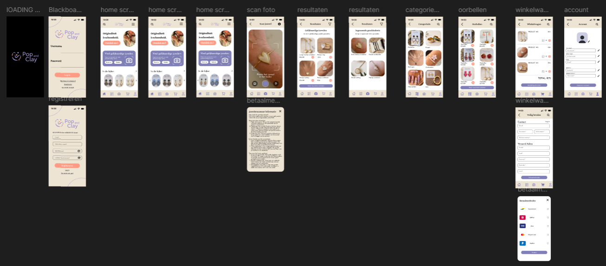

1. Context & Achtergrond
Pop and Clay is een gepassioneerde small business die handgemaakte juwelen creëert uit polymeerklei en andere hoogwaardige materialen. Wat dit merk bijzonder maakt, is de veelzijdigheid: de collectie biedt unieke stukken voor dames, heren en kinderen.
2. (Soft) Rebranding
Om online de juiste doelgroep aan te spreken, is er behoefte aan een vernieuwde digitale uitstraling. Deze case start daarom met een (soft) rebranding. Het huidige zwart-wit logo maakt plaats voor een nieuwe, zachte en professionele huisstijl. Met volledige creatieve vrijheid (carte blanche) is het de bedoeling om een visuele identiteit neer te zetten die het vakmanschap van de juwelen perfect weerspiegelt.
3. E-Commerce & Functionele Website
Vervolgens wordt deze frisse branding doorgetrokken in een gloednieuwe e-commerce website. De nadruk ligt op een visueel aantrekkelijk design en een vlotte navigatie. In plaats van lange, onoverzichtelijke pagina's (geen ellenlange scrollers), kiezen we voor een strakke en gebruiksvriendelijke structuur waar de bezoeker snel vindt wat hij zoekt.
De kern van de website is de webshop. Deze moet technisch goed in elkaar zitten, met ondersteuning voor een aantal specifieke key-features:
- Productvarianten: Flexibele selectie op basis van kleur en dynamische prijsstelling.
- Foto-upload functionaliteit: Een laagdrempelige optie voor klanten om afbeeldingen te uploaden ten behoeve van uniek maatwerk.
- Conversie & Vertrouwen: Integratie van een veilige online betaalomgeving en een overzichtelijke module voor betrouwbare klantreviews.
- Informatief: Een sfeervolle 'Over mij'-pagina die het persoonlijke verhaal achter het merk vertelt, aangevuld met een functioneel contactformulier.
Kortom: een veelzijdige case waarin een nieuwe merkidentiteit naadloos samensmelt met een sterke, gebruiksvriendelijke webshop.
Mijn aandeel
Binnen de case voor Pop and Clay heb ik een veelzijdige rol op mij genomen, waarbij mijn focus lag op onderzoek, UI/UX-design, branding, contentcreatie en de structurele documentatie van ons projectproces.
Mijn werkzaamheden startten in de Onderzoeks- & Strategiefase. Om de juiste richting te bepalen, heb ik actief meegeholpen aan een grondig concurrentieonderzoek en het formuleren van de unieke waarden en een SWOT-analyse. Daarnaast wilde ik de behoeften van onze potentiële klanten beter begrijpen, wat ik heb gedaan door gerichte interviews af te nemen met de doelgroep. Deze inzichten hebben we vervolgens vertaald naar een concept poster die diende als leidraad voor het project.
Op het gebied van Branding, UX & Visual Design lag mijn hoofdverantwoordelijkheid bij de visuele en functionele uitwerking. Via moodboards hebben we samen de algemene stijl bepaald. Vervolgens ben ik aan de slag gegaan met het nieuwe logo; tijdens het schetsen hiervan heb ik actief om feedback gevraagd aan mijn groepsgenoten om het ontwerp telkens te verfijnen, waarna ik het logo digitaal heb uitgewerkt. Het concept en de richting van de app hebben we als team besproken, waarna ik dit concreet heb uitgewerkt in het design en prototype. Ik definieerde de key user flows en sitemaps, trok de zachte huisstijl door naar het UI-design en bouwde een uitgebreide UI-component library in Figma op. Vanuit die basis heb ik het volledig klikbare app-prototype (inclusief alle states en interacties) zelfstandig gerealiseerd.
Daarnaast was ik verantwoordelijk voor een stuk Content. Zo heb ik de privacy policy en de contactpagina uitgeschreven, waarbij ik de communicatie met de klant verzorgde om de juiste gegevens af te stemmen.
Tot slot speelde ik een belangrijke rol in ons Scrum-proces & Documentatie. Ik hechtte veel waarde aan overzicht en documenteerde onze processen, sitemaps, brand identity en componenten zorgvuldig in Confluence. Ik verzorgde meermaals de voorbereiding en presentaties voor de sprint reviews en nam actief deel aan alle Scrum-events, zoals daily stand-ups, backlog refinements en retrospectives.
Wat ik heb geleerd & Resultaat
Deze WPL2-case was een enorm leerzame ervaring waarin ik zowel mijn technische designvaardigheden als mijn inzicht in projectmanagement en teamwork flink heb kunnen verdiepen.
Wat ik vooral heb geleerd op het gebied van Design & Iteratie, is de absolute meerwaarde van een iteratief ontwerpproces. Door al vroeg tijdens het schetsen van het logo feedback te vragen aan mijn groepsgenoten, merkte ik hoe je samen veel sneller tot een sterker eindresultaat komt. Daarnaast heb ik mijn vaardigheden in Figma naar een hoger niveau getild. Het gestructureerd opzetten van een uitgebreide UI-component library en het bouwen van een geavanceerd, volledig klikbaar prototype met complexe states heeft me geleerd hoe je een efficiënt en schaalbaar design system opzet.
Op het vlak van Onderzoek & Strategie heb ik ervaren hoe cruciaal de voorbereidende fase is. Het afnemen van interviews en het uitvoeren van een concurrentieonderzoek hielpen mij om designkeuzes echt te onderbouwen vanuit de behoeften van de gebruiker, in plaats van puur op visueel gevoel te ontwerpen.
Daarnaast was het werken binnen het Scrum-framework een waardevolle les. Het zorgvuldig documenteren in Confluence, het voorbereiden van sprint reviews en de directe communicatie met de klant (bijvoorbeeld voor het afstemmen van de contactgegevens en privacy policy) hebben mij laten zien hoe belangrijk transparantie en heldere communicatie zijn voor het slagen van een project.
Het resultaat
Het eindresultaat is een visueel aantrekkelijk en gebruiksvriendelijk app-prototype, gedragen door een sterke, zachte merkidentiteit die perfect past bij de ambachtelijke juwelen van Pop and Clay. Ik kijk met veel trots terug op de veelzijdige bijdrage die ik aan dit project heb mogen leveren!

Screenshot van het door mij ontworpen app-prototype voor Pop and Clay.